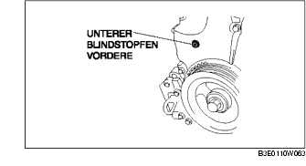
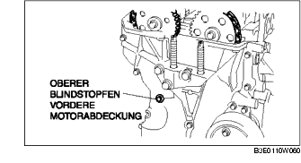
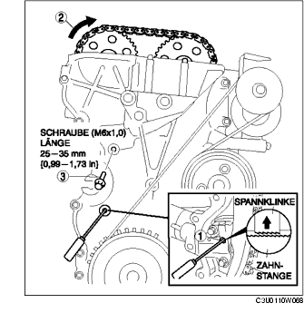

VENTILSPIEL EINSTELLEN [LF]
B3E011012111W04
1. Den Stopfen entfernen. (Siehe ABDECKPLATTE AUSBAUEN/EINBAUEN [LF].)
2. Die Batterieabdeckung ausbauen. (Siehe BATTERIE AUSBAUEN/EINBAUEN [LF].)
3. Das Massekabel der Batterie abklemmen.
4. Den Kabelbaum lösen.
5. Folgende Bauteile ausbauen.
-
(1) Vorderrad und Reifen (R) (Siehe ALLGEMEINE VORGEHENSWEISEN (RADAUFHÄNGUNG).)
-
(2) Motorabdeckung und Spritzschutz (R)
-
(3) Zündspulen (Siehe ZÜNDSPULE AUSBAUEN/EINBAUEN [LF].)
-
(4) Belüftungsschlauch
-
(5) Zylinderkopfhaube
-
(6) Unterer Blindstopfen der vorderen Motorabdeckung

-
(7) Oberer Blindstopfen der vorderen Motorabdeckung

-
(8) Blindstopfen des Zylinderblocks
6. Das SST wie abgebildet einbauen.
7. Die Kurbelwelle im Uhrzeigersinn drehen, bis sich Zylinder Nr. 1 in OT-Stellung befindet (bis das Ausgleichsgewicht am SSTanstößt).
8. Die Steuerkette lockern.
-
(1) Mit einem passenden Schraubedreher oder einem gleichwertigen Werkzeug die Rastklinke des Steuerkettenspanners entriegeln.

-
(2) Die Auslass-Nockenwelle mit einem geeigneten Schraubenschlüssel am Sechskantzapfen drehen und die Steuerkette lockern.
-
(3) Eine geeignete Schraube (M6 x 1,0, Länge 25-35 mm {0,99-1,37 in}) in die Bohrung des unteren Blindstopfens der vorderen Motorabdeckung hineindrehen und die Steuerkettenführung in gelockerter Stellung sichern.
9. Die Auslass-Nockenwelle wie abgebildet mit einem geeigneten Schraubenschlüssel am Sechskantzapfen gegenhalten.
10. Das Auslass-Nockenwellenrad ausbauen.
11. Die Befestigungsschrauben des Nockenwellen-Lagerdeckels in der abgebildeten Reihenfolge in 2-3 Schritten lösen.
-
Hinweis
-
• Zylinderkopf und Nockenwellen-Lagerdeckel sind nummeriert, um sicherzustellen, dass sie wieder an ihrer ursprünglichen Position eingesetzt werden. Wenn sie ausgebaut wurden, sollten die Deckel zusammen mit den Zylinderköpfen aufbewahrt werden, von denen sie entfernt wurden. Die Deckel nicht vertauschen.
12. Die Nockenwelle ausbauen.
13. Den Stößel entfernen.
14. Die Stärke der benötigten Einstellscheibe ermitteln.
-
Neue Einstellscheibe
-
= Stärke der ausgebauten Einstellscheibe + Gemessenes Ventilspiel - Sollwert des Spiels (EINLASS: 0,25 mm {0,0098 in}, AUSLASS: 0,30 mm {0,0118 in})
-
Sollwert [Kalter Motor]
-
IN: 0,22-0,28 mm {0,0087-0,0110 in}
-
EX: 0,27-0,33 mm {0,0107-0,0129 in}
15. Den Zylinder Nr. 1 in OT-Stellung bringen und die Nockenwelle einbauen.
16. Die Schrauben der Nockenwellen-Lagerdeckel in den 2 folgenden Schritten festziehen.
-
Anzugsmoment
-
(1) 5,0-9,0 Nm
-
{51,0-91,7 cmkg, 44,3-79,6 in·lbf}
-
(2) 14,0-17,0 Nm
-
{1,5-1,7 mkg, 10,4-12,5 ft·lbf}
17. Das Auslass-Nockenwellenrad einbauen.
-
Hinweis
-
• Bei diesem Arbeitsschritt die Schraube des Nockenwellenrads noch nicht festziehen. Zuerst die Steuerzeiten prüfen, erst dann die Schraube festziehen.
18. Das SST wie abgebildet an der Nockenwelle ansetzen.
19. Die Schraube (M6 x 1,0; Länge 25-35 mm {0,99-1,37 in}) an der vorderen Motorabdeckung herausdrehen, um die Steuerkette zu spannen.
20. Die Kurbelwelle im Uhrzeigersinn drehen, bis sich Zylinder Nr. 1 in OT-Stellung des Verdichtungstaktes befindet (bis das Ausgleichsgewicht am SST anstößt).
21. Die Auslass-Nockenwelle wie abgebildet mit einem geeigneten Schraubenschlüssel am Sechskantzapfen gegenhalten.
22. Die Sicherungsschraube des Auslass-Nockenwellerads festziehen.
-
Anzugsmoment
-
69-75 Nm
-
{7,1-7,6 mkg, 50,9-55,3 ft·lbf}
23. Das SST von der Nockenwelle abnehmen.
24. Das SST vom unteren Blindstopfen des Zylinderblocks entfernen.
25. Die Kurbelwelle im Uhrzeigersinn um zwei Umdrehungen in OT-Stellung drehen.
-
• Falls die Markierungen nicht fluchten, die Sicherungsschraube der Kurbelwellen-Riemenscheibe lockern und die Arbeitsvorgänge ab Schritt 14 wiederholen.
26. Silikondichtmittel auf den oberen Blindstopfen der vorderen Motorabdeckung auftragen.
27. Folgende Bauteile einbauen.
-
(1) Oberer Blindstopfen der vorderen Motorabdeckung
-
Anzugsmoment
-
8,0-11,5 Nm
-
{81,6-117,2 cmkg, 70,9-101,7 in·lbf}
-
(2) Blindstopfen des Zylinderblocks

-
Anzugsmoment
-
18-22 Nm
-
{1,9-2,2 mkg, 14-16 ft·lbf}
-
(3) Neuer unterer Blindstopfen der vorderen Motorabdeckung
-
Anzugsmoment
-
10-14 Nm
-
{1,1-1,4 mkg, 7,4-10,3 ft·lbf
-
(4) Zylinderkopfhaube (Siehe Einbauhinweis für Zylinderkopfhaube.)
-
(5) Belüftungsschlauch
-
(6) Zündspulen (Siehe ZÜNDSPULE AUSBAUEN/EINBAUEN [LF].)
-
(7) Motorabdeckung und Spritzschutz (R)
-
(8) Vorderrad und Reifen (R) (Siehe ALLGEMEINE VORGEHENSWEISEN (RADAUFHÄNGUNG).)
28. Den Kabelbaum anschließen.
29. Das Massekabel der Batterie anschließen.
30. Die Batterieabdeckung einbauen. (Siehe BATTERIE AUSBAUEN/EINBAUEN [LF].)
31. Die Abdeckplatte einbauen. (Siehe ABDECKPLATTE AUSBAUEN/EINBAUEN [LF].)